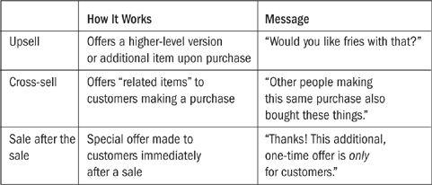

“Remind people that profit is the difference
between revenue and expense.
This makes you look smart.”
—SCOTT ADAMS
Over and over, the subjects of our case studies discussed how growing the business wasn’t nearly as hard as starting the business. “It took a while to find something that worked,” a common statement began, “but once we were rolling, we gained traction and quickly took off.”
As we saw with Nick’s story in Chapter 6—the guy who was thrilled about selling his first $50 print—sometimes the first sale is the hardest but also the most rewarding. Several others said much the same thing: “The day I got my first sale was when I knew the business was going to work out. Everything that came afterward was reinforcement of the initial success.”
I call it “the first $1.26 is the hardest” principle, because one day many years ago I made my first $1.26 with a new project while on a layover in Brussels. I couldn’t afford a single Belgian waffle on the day’s take, but I had a good feeling about the future. In this chapter, we’ll look at ways to move on up by increasing income in an existing business.
How does this happen? No doubt there are a few different factors. Momentum is important, as is the ongoing attention of the business owner. The longer a microbusiness is around, with customers and onlookers saying good things about it, the more the word will spread. In addition to these natural factors, a series of small, regular actions is all it takes for many businesses to go from zero to hero in a short period of time. These actions are called tweaks.
Nev Lapwood was a classic ski bum. He lived in Whistler, British Columbia, and worked “off and on” in restaurants at night while snowboarding during the day. Life was basic but good … until the limited employment ended when Nev was laid off. Needing to make ends meet, he began offering snowboard lessons, a part-time gig that was highly valued by his students.
Teaching students in person on the Whistler slopes was fun and rewarding, but it also had a number of built-in unavoidable limitations: lots of competition, relatively few clients, and limited times of year when he could work. Nev knew that people all over the world wanted to learn about snowboarding—what if he could teach them all virtually, without needing to be in the same place? Getting his act together, Nev worked with a couple of close friends to create Snowboard Addiction, a worldwide series of snowboarding tutorials.
It was an instant hit, drawing customers from twenty countries and making $30,000 in year one—not bad for a ski bum. (Since Nev had never been that focused on making money, that was the highest annual income he had ever had at that point.) The next year, he put more thought into the business, scaling up with affiliates and a broader range of products. The result: just under $100,000 in net income. Nev was still on the slopes during the day but worked closely with his new partners during the downtimes to scale the business even further. The next plan was foreign language translation: Snowboard Addiction went out around the world in nine languages, with more versions scheduled to roll out based on customer demand.
Naturally, the growing business had its challenges. An untrained and accidental entrepreneur, Nev had to learn a lot about strategy, accounting, and marketing. Stickers that were ordered from China arrived months late and in an unusable condition. Just two years in, however, the business was on track to earn at least $300,000. As we’ve heard over and over in other stories, Nev speaks proudly of his new independence. “Frankly, starting this business after being laid off has been the best decision of my life,” he says. “The greatest benefit has been the freedom and ability to do what I like. My plan is to travel for six months of every year and run the business for the other six months of each year.” And of course, while he’s running the business, he still finds plenty of time to hit the slopes.
The not-so-secret to improving income in an existing business is through tweaks: small changes that create a big impact. If a product typically has a 1.5 percent conversion rate and you increase the rate to 1.75 percent, the difference adds up to a lot of money as time goes on. If a business normally attracts four new customers a day and begins attracting five, the impact is tremendous. Not only is the business now earning 25 percent more income, it has diversified its customer base.*
If you grow your traffic a little and also increase your conversion rate a little while also increasing the average sales price a little … your business grows a lot. These are the most important areas on which to focus your tweak efforts, so let’s look at them closely.
INCREASE TRAFFIC. Whether you have a website or a storefront, without people who regularly drop by to see your offer, you have no business. Traffic means attention. How much attention is your business getting? I heard from a new business owner who was disappointed in the results of her first product launch because only four people had purchased. “How many prospects were on your list?” I asked.
“I’m not entirely sure,” she said. “Maybe one hundred?”
I said I was impressed, because 4 percent is a great conversion rate for many businesses. The problem wasn’t getting more of her limited audience to purchase. It was getting more of an audience in the first place. The best thing to do in this situation is to focus on increasing traffic, thereby bringing in more potential customers.†
INCREASE CONVERSION. Once you have a stable base of attention (whether measured in site traffic or another way), you’ll want to look closely at the conversion rate: the percentage of prospects who become customers. The classic way to increase the conversion rate is through testing by measuring one copywriting attempt (or offer, or headline, or something else) against another and going with the winner.
Traffic → A/B test → compare results
After you have a winner, you move on to another test, always challenging the “champion” against another idea. (Google Optimizer allows you to do this for free.)
This can indeed be a good strategy. One tip, however: It may be more important to pay close attention to where customers come from than to what you can do to convert them once they arrive. “Testing is important, but it pales in comparison to the traffic source,” author and entrepreneur Ramit Sethi told me. “People love to spend time split-testing headlines, copy, graphics, even tiny boxes. They can usually achieve greater returns by focusing on the source.”
INCREASE AVERAGE SALES PRICE. If you can increase the average sales price per order, this will increase your bottom line, just as increasing traffic or conversion will. You can do this most easily through upsells, cross-sells, and sales after the sale. If you shop on Amazon.com, you’ve probably seen its “related items” and “customers who bought this item also bought these items” features. These features are highlighted (and widely replicated elsewhere) for a simple reason: They work extremely well.
The difference between upsells, cross-sells, and sales after the sale is illustrated below:

(A good shopping cart and payment processor will allow you to add these items easily. If yours doesn’t, it’s time to change services.)
SELL MORE TO EXISTING CUSTOMERS. Your existing customers are likely to respond to sales, promotions, or additional offers of any kind. By reaching out to them more frequently, you’ll almost certainly bring in additional income. You’ll want to be careful about not pushing them too much, but the key is balance: Your customers want to hear from you. They have given you money in exchange for something they value. Make it easy for them to do so again and again.
When I talked with business owners about the kind of tweaks they worked on, many said things such as “The most important thing is to keep taking action.” Others mentioned setting aside half an hour every morning to work strictly on business improvements before diving in to the actual running of the business. All of this sounds good, but it also begs the question: If you decide to take action, what does action look like? How do you spend your daily half hour on business improvements?
Here are some common examples of action-based tweaking.
CREATE A HALL OF FAME. Shine a spotlight on your best customers; let them tell their own stories about how they’ve been helped through your business. It helps to provide a variety of stories, as people will relate to different perspectives and backgrounds. This provides “social proof” that your product or service works for all kinds of people.
INSTITUTE A NEW UPSELL. Adding a good upsell offer—or several—is probably the easiest and most powerful strategy you can use to ramp up your average order size. Some business owners are initially apprehensive about upsells, not wanting to apply a high-pressure or “sleazy” technique. But a good upsell isn’t sleazy at all; it’s contextually appropriate and inspires appreciation from customers. “Wow, thanks for the offer!” is a common response. Think about going to a restaurant where you hadn’t planned on eating dessert, but the waiter’s recommendation of the chocolate bread pudding is so compelling that you have to try it … and it’s delicious. You were successfully upsold, and you were happy about it.
The confirmation page that appears after an online purchase is one of the best and most underused places for an upsell offer. Right after a customer has purchased, they are highly inclined to purchase something else. Make a strong offer here, and your conversion rate can be 30 percent or higher.
ENCOURAGE REFERRALS. Most people know that word of mouth is the greatest source of new business, but instead of waiting for something to happen, you can encourage your customers to spread the word.‡ When asking for referrals, it helps to be specific: “Can you send our offer to three of your friends?” or “Can you ‘like’ our page on Facebook?” might be a good fit. Again, the confirmation page after a purchase is a good place to do this, in addition to a mailing sent a few days later.
HOLD A CONTEST. As mentioned in Chapter 9, some people become extremely motivated about contests and giveaways. Find a way to give away a prize and invite people to compete. The bigger the prize or the more unique the contest, the better. You may not make a ton of sales from a contest, but it will bring you more attention and a greater audience for future sales.
INTRODUCE THE MOST POWERFUL GUARANTEE YOU CAN THINK OF. Most businesses have boring guarantees: If you don’t like this, you’ll get your money back. But when we buy something, our money isn’t all we’re concerned with. We’re also concerned about time and validation. If I have to return something, will it be a pain in the ass? Make it the opposite of a pain in the ass—some businesses provide a guarantee of 110 percent, ensuring that the burden is on the business to deliver. Zappos famously created free shipping both ways to take away the hesitation about buying shoes without trying them on. A host of competitors had to follow suit.§
ALTERNATIVELY, MAKE A BIG DEAL ABOUT OFFERING NO GUARANTEE. Instead of providing an incredible guarantee, provide no guarantee—and make a big deal about this fact. Note that this strategy usually works better for high-end products. It will likely decrease overall sales but increase the commitment level from those who do purchase.
Ironically, people who pay for high-end products tend to be better customers all around. “Low-paying buyers are the worst,” one business owner who sold a broad range of products at different prices told me. “We have far more complaints from people who pay $10 and expect the world than from those who pay $1,000.” I’ve noticed a similar effect in my own business, with people buying the lower-priced version of something generating a much higher rate of customer service issues than those who buy the higher-priced version.
The key lesson in all these ideas is to always be experimenting. Try new things and see what happens.
Another easy thing many existing businesses can do to add a new revenue source quickly is to create a service from a product-based business or create a product from a service-based business. Remember the story about the restaurant in Chapter 2? Most people go to a restaurant so they can relax and let the staff serve them. But others really are interested in how the cooking works, so restaurants sometimes offer cooking classes to show off their favorite recipes and create more loyalty among frequent diners. The key is that the lessons are held on Saturday or Sunday afternoons, times when the restaurant is closed or not very busy. Saturday night is reserved for the main event of regular dining.
If you have a product business, ask yourself this question: “My product is x … how can I teach customers about y?” Then create a new version of your offering that includes consulting, coaching, a “jump-start” session, premium technical support, or something else. Make it clear that customers don’t need the service; they can get by on their own with just the product. But for those who are interested in some extra hand-holding, the service is available and waiting for them.
Perry Marshall, a Chicago-based business consultant, made the switch from product to service by offering an educational course based on knowledge he usually shared through a one-time product. Perry had written a popular report that sold multiple copies every day for $50 each. He was also busy offering one-on-one personal consulting, but one day someone gave him an idea: “Everyone who buys this report loves it, but they don’t always know how to implement what you teach. They also don’t need your high-end one-on-one consulting, so why not offer a series of jump-start workshops that people could take as a group?” Perry wasn’t sure at first but decided to give it a try. When the idea generated more than a million dollars for his small firm, he was astounded.
Alternatively, if you operate a service-based business, consider how you can introduce a “productized” version of the service. My designer, Reese Spykerman, does work that is so great that when word got out, a lot of people began noticing and asking her for quotes. It didn’t take long for Reese to have far more inquiries than she could handle. Reese’s husband, Jason, manages the inquiries that come in every day, and he noticed that they fit into three categories.
Category 1: Prospects with significant money to spend who would likely be good clients. In these cases, Jason consulted with Reese, agreed to accept the clients if they still wished to proceed, and issued them a quote for the requested work.
Category 2: Prospects who didn’t have any money to spend (designers receive a lot of these queries, unfortunately) or people who just weren’t the right fit for Reese’s work. In this case, Jason politely declined the request and encouraged them to look elsewhere.
These two categories were fairly straightforward, and as hundreds of inquires came in over the course of an average year, Jason became astute in telling right away which group someone was in. But there was another, third category that was more complicated.
Category 3: Prospects who had some money to spend, were nice people with interesting projects, and didn’t need a completely custom solution.
The third category was complicated because Reese and Jason didn’t want to send them away, but they also didn’t want to take on an excessive number of projects, thus limiting Reese’s design time for key clients. They did some careful subcontracting, but they didn’t want to become a low-end provider or farm out much of the work to others.
After considering different options, Reese and Jason decided to create a series of “themes” and website headers that customers could purchase for a flat rate. These options weren’t the same as a genuinely custom-crafted site design, but they were a lot better than everything else on the market.
Providing both a product and a service helps with your marketing as well. You can say to prospects, “Hey, my service costs a lot of money because everything is customized. But if you just need a general solution, you can get this version for much less.” Some customers will still want the customized solution, but this way you don’t shut the door on others who like the idea but can’t afford the high-end work.
What Sets Happy Knits Apart:
AN EXAMINATION OF A THRIVING RETAIL PRACTICE
How does a retail establishment thrive when those around it struggle? Welcome to Happy Knits, a yarn store and Internet retailer based in the trendy Southeast area of Portland, Oregon. Here are five ways Happy Knits stands out.
A welcoming space. Knitters are welcome to stay for hours, whether shopping or knitting. Guests who happen to be accompanying knitters—usually husbands or children—are also welcome to hang out, sit in comfy chairs, and use the free WiFi while the knitter of the family looks around. (Most, though not all, knitters are women.)
A clear online strategy. Most retail stores have a website, but few combine a physical location with an online shopping experience as well as Happy Knits does. “Online is limitless,” says store owner Sarah Young. Even with a large retail space, online sales from around the world constitute more than half the sales. She works the system by maintaining close ties with Ravelry, a social network specifically for knitters, and providing frequent email updates and offers to previous customers.
Great displays (in store) and great photos (online). Display, color, and placement are important, so Happy Knits includes a staging area for professional photos in a back room of the store. I asked Sarah why she doesn’t just use the photos provided by the manufacturer the way other stores do. “Because they’re not good enough,” she told me. “We try to do everything here with a focus on quality.”
Exclusive deals. By working with yarn companies as partners, Happy Knits creates exclusivity that is hard to emulate. You might think this is an unfair advantage, but the companies offered these deals to Sarah because her customers said such good things about the store and because she is careful to pay vendors on time. (Lesson: To get an unfair advantage, provide remarkable service.)
Love for customers. Every order sent by mail includes a personalized thank-you note from an employee, encouraging customers to call if they need help with a pattern, plus free samples of other products. If an item is back ordered because of a computer glitch, an employee will call the customer proactively to apologize and ask if she would like a substitution.
“Be nice to people and provide a great service” may not sound like much of a differentiation, but all these things add up. Whether you have a retail store or not, you could learn something from Happy Knits.
You might expect that a price increase has a tendency to filter some customers away from the business while making up for the loss with higher overall income. Sometimes this is indeed the case, but many of the service providers I talked with were surprised that almost no one left after an increase. Several said that when they told their customers or clients about the increase, the response was, “It’s about time! You’re worth more than you’ve been charging.” (When your clients complain about the price being too low, you should listen.)
Andy Dunn is a developer in Belfast, Northern Ireland. He left his day job after pitching a Web application to a CEO. Crucially, Andy didn’t just pitch an idea—he had the idea and then acted on it by creating the entire app and sending it over to the CEO, requesting approval. Impressed, the CEO called him up to say thanks, and even agreed to underwrite the expenses for some additional features.
Out on his own, Andy had no problem attracting new business, but he did have a big problem with pricing. Wanting to appear attractive to prospective clients, he priced his services so low that they were unprofitable. In one case he ended up several thousand euros in debt by bidding too low and then outsourcing part of the work. After that experience, he knew he’d have to make a change. The change came in the form of a 25 percent raise, something he was initially afraid to do, but he was greatly relieved after it was done.
“The simple act of raising my rates by 25 percent allowed me to either work seven hours less a week or make a significant increase in my monthly income,” he told me on a Skype call from Belfast. “The other, unexpected benefit was that it gave me much more confidence. Until I upped the rates, I didn’t make the connection that I was worth more than I had been charging.”
Andy’s story was repeated in various forms by other service providers and a few product-based businesses too. In 2010 I conducted a separate study of fourteen freelancers who had raised their rates successfully. I asked them how they did it, what they expected to happen, and what actually happened. These freelancers were working in completely different fields, including a veterinarian, a voice coach, a sign language interpreter, and the more typical crowd of consultants, writers, and designers. They were also located throughout the English-speaking world, including Canada, Australia, New Zealand, South Africa, the United Kingdom, and the United States.
Despite the diverse backgrounds and regions, I heard the same story over and over: “Before my price increase, I was worried that no one would hire me again. After the price increase, I realized how easy it was, and I wish I had done it sooner.” In most cases, the change was anticlimactic. Clients said, “OK, sure,” and moved on.
I also asked about suggestions for other service providers who are thinking about raising their rates. The most common advice was to maintain a practice of regular rate increases so that it becomes normal and expected. One freelancer likened it to going to the grocery store: No one expects the price of milk to be the same from year to year. We all know that over time it’s going to go up, and the same should be true for the prices we charge clients. Another suggested an annual date for changing prices, either January 1 or the beginning of your calendar year if it’s different. Others said that they offered an ongoing discount for current clients, among whom the work is more familiar and a strong relationship already exists.
Lastly, remember to price on the basis of value, not time. One designer sent us a good example of what not to do: “I have a colleague who moderates her rate according to how busy the day was and how long her lunch break was. Crazy!” Our correspondent is right: Customers pay for what you deliver, not how long you spend at lunch.
The Best Social Media Strategy:
Talk About Yourself
You may have heard that the way to build a following on Twitter or other social networks is to promote other people’s work. People don’t want to hear you talk about yourself all the time, right?
This advice is well-meaning and sounds good on the surface. Unfortunately, it’s also wrong. Promoting other people’s work and sharing links to interesting articles is fine, but don’t expect that merely doing that will help you gain followers or attention. People follow you (or your business) because that’s what they’re interested in—you. I follow Shaquille O’Neal’s tweets and posts because I’m interested in what he has to say. If he spent all his time talking about other people and mentioning his other fans, I wouldn’t be as interested.
What should you talk about online? It’s simple: Talk about yourself and your business. Really. If people don’t like what you do or say, they can unfollow you, but chances are that you’ll gain far more followers than you lose. Finally, remember that online social networks are merely reflections of what’s happening elsewhere. Want more Twitter followers? Then do something interesting … away from Twitter.
There’s no point pursuing growth for growth’s sake; you should scale a business only if you really want to. Many of the subjects of our case studies said they had turned down growth opportunities in a deliberate plan to remain small: “I just didn’t want the hassle of managing people.”
The decision on going big versus staying small is unique to each person (we’ll look at it much more in the next two chapters), but in this section we want to focus on things you can do to increase income without hiring additional employees or bringing in outside investors. All the tweaks mentioned above can be done by a solopreneur. Some might be easier with assistants, contractors, or employees, but none require a team. Before we close it out, let’s look at a key distinction between two different kinds of growth.
You can grow a business one of two ways: horizontally, by going wide and creating different products to apply to different people, or vertically, by going deep and creating more levels of engagement with customers. The flowchart on this page shows how this works.
Different businesses will find that one solution suits them better than the other, and it’s also possible to pursue limited growth in both areas. Mostly, though, you can keep moving on up, tweaking your way to the bank and growing your business. The first $1.26—or the first sale—may be the hardest, but after that, your most difficult choice may be deciding between many good options for growth.
KEY POINTS
“Moving on up” by increasing income in an existing business is usually easier than initially starting the business.
*I’m grateful to Sonia Simone and Brian Clark for a discussion and helpful tips on this topic.
†Corbett Barr maintains a helpful (and free) set of resources on building traffic at ThinkTraffic.net.
‡John Jantsch wrote a great book called The Referral Engine, which is all about creating a systemized process for encouraging referrals. Highly recommended.
§A little-known secret at Zappos is that they do cut people off who abuse the generous return policy. CEO Tony Hsieh explained to me that if a customer blatantly takes advantage of them—returning worn shoes on day 364 of the 365-day return period, for example—they’ll honor the refund once, but they’ll also gently advise that customer not to purchase from Zappos anymore. Fortunately, he also said, most people are honest.